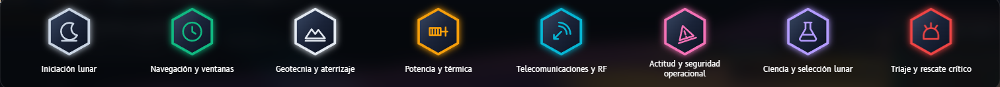
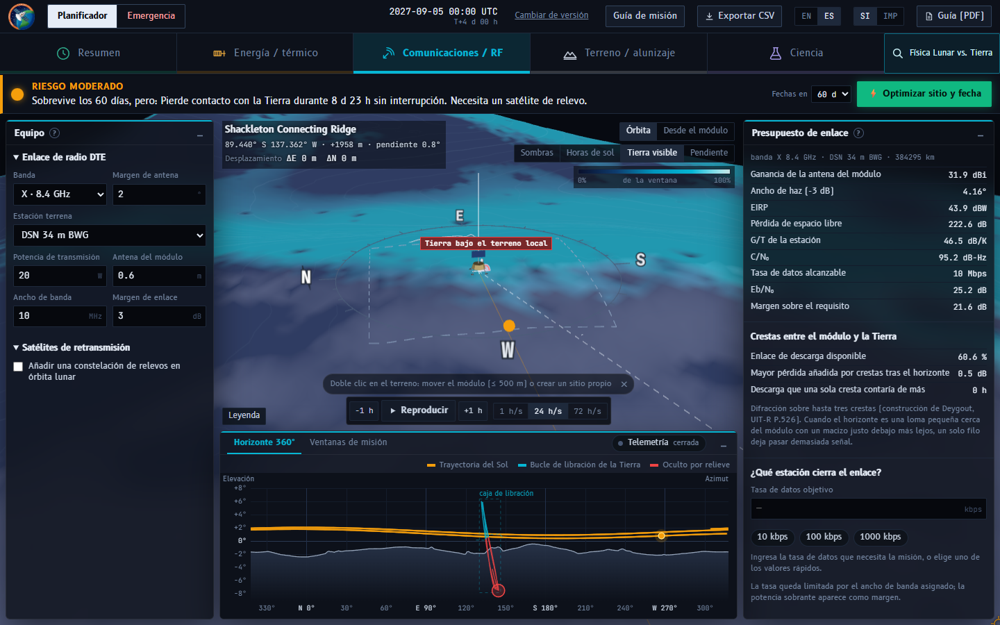
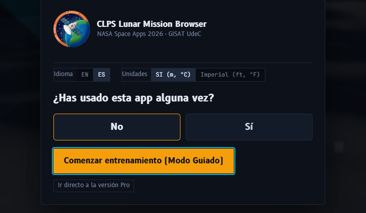
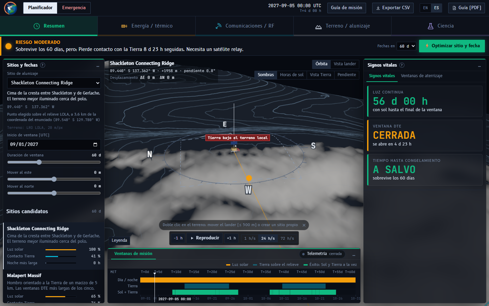
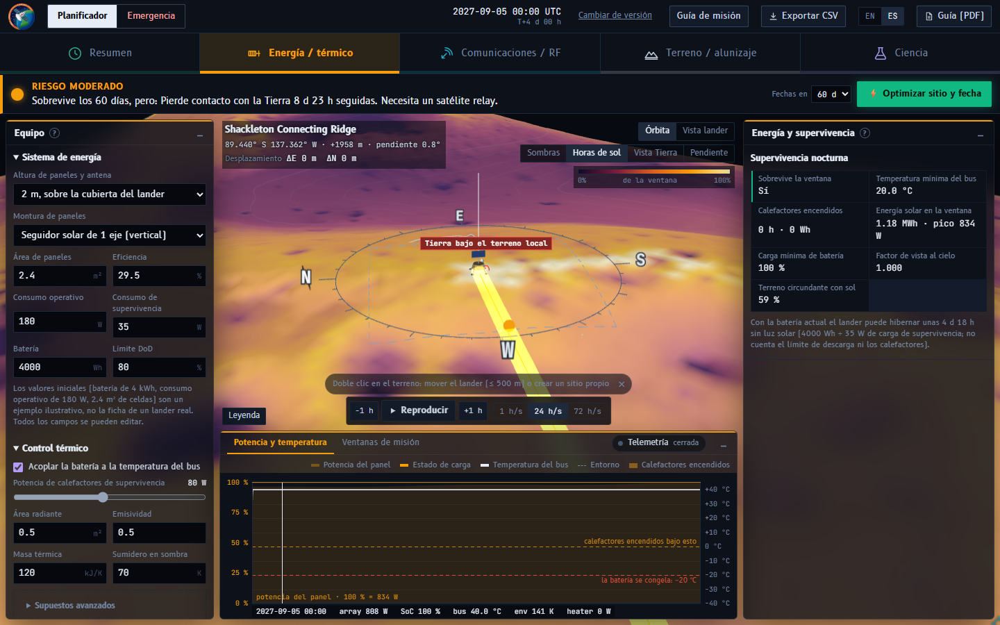
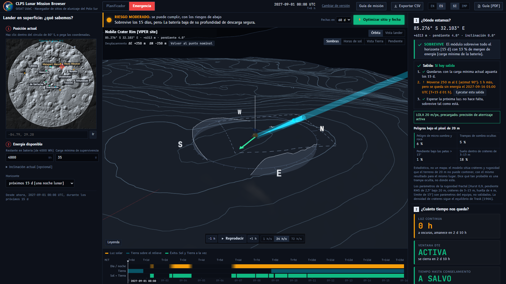
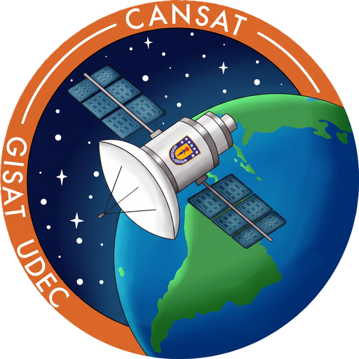

Modo Guiado
Ocho misiones narradas. Cada subsistema dominado entrega su insignia, y «Aprender más» explica por qué 200 m lo cambian todo en la Luna.

Febrero 2024 · IM-1 Odysseus
Marzo 2025 · IM-2 Athena
De costado en un cráter en sombra. Sin luz, la misión duró unas 13 horas.
Llegar a la Luna ya no es el problema.
Sobrevivir en su superficie, sí.
Escena 3D: módulo con el preajuste de inclinación IM-1 de la app
La paradoja polar
Datos: LRO LOLA (Barker et al. 2023) · efemérides contrastadas con NASA JPL Horizons, error máx. 0,0023°

El Sol rasante y la Tierra meciéndose tras las crestas, sobre el relieve LOLA.
GISAT UdeC · Lunar Landing Site Navigator v3.2

Ocho misiones narradas. Cada subsistema dominado entrega su insignia, y «Aprender más» explica por qué 200 m lo cambian todo en la Luna.

La consola completa de ingeniería: todos los controles, comparación A/B y el mismo motor físico detrás de cada cifra.

Física que nadie más modela junta
Actitud 6-DOF. Con el alabeo de IM-1, el enlace con la Tierra cae del 35 % al 7 % de la ventana.
Cardán de antena. El plato se reorienta solo y recupera la Tierra.
Térmica criogénica. Calefactores a 0 °C, batería perdida a −20 °C; el mástil de 10 m saca los paneles de la sombra.

Potencia, batería y temperatura del bus en cada hora de la misión, con el límite de −20 °C a la vista.
Telecomunicaciones con física real
Presupuesto de enlace completo y pérdida por crestas, estación por estación.
Emergencia en vivo · cerca de Nobile
El módulo cae fuera de curso, en una ladera en sombra.
NO SOBREVIVE tal como está. Sale del rango térmico en T+2 d 17 h.
25 puntos de contacto evaluados. Vector de escape: 250 m al este.
SOBREVIVE los 15 días con 13 % de margen de energía.

El mismo triaje que acabamos de contar: veredicto, salida y cuánto tiempo queda.
Una aplicación terminada, no una maqueta
En el Polo Sur lunar, 200 metros o unas pocas horas escriben la historia.
Hoy, esa frontera está abierta para todos.

GISAT UdeC · NASA Space Apps Challenge 2026 · Concepción→ / Espacio avanzar · ← volver · N notas del orador · T cronómetro · F pantalla completa